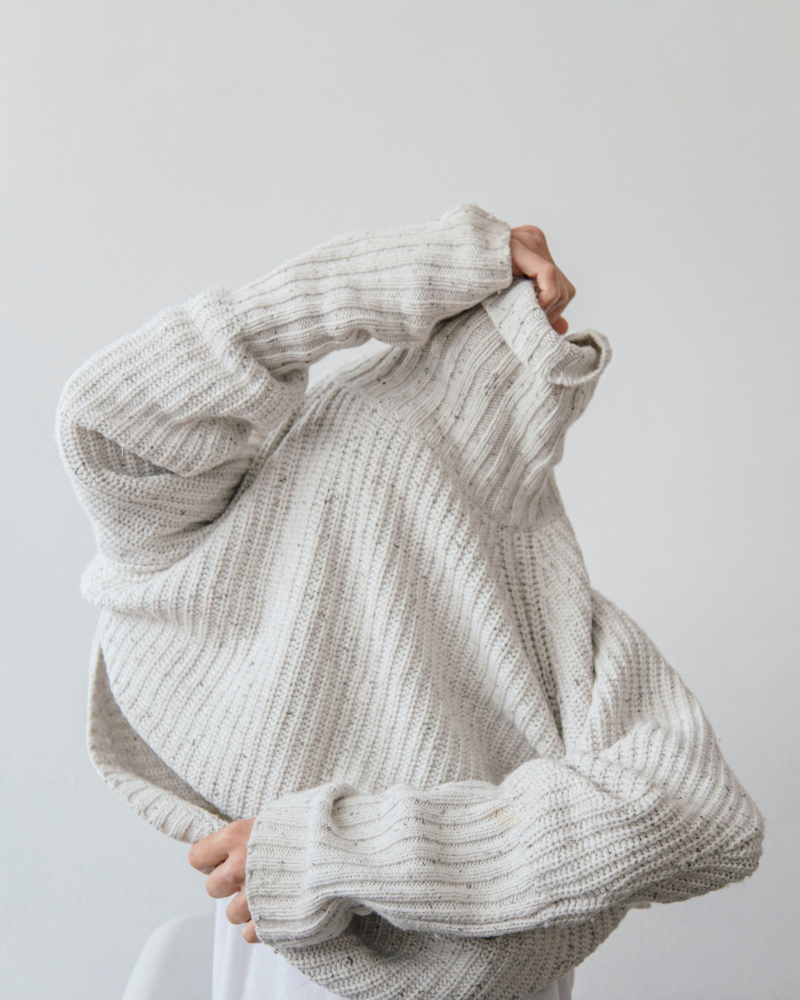

Sweaters

Dresses

Pants

Coats

T-shirts

Our company advocates eco-responsibility, solidarity, sharing, respect, benevolence... To fight against overconsumption of textiles, we have decided to create green Fashion. Its principle is simple: to offer Lille residents clothing rental in several forms, making this service as simple and attractive as fast fashion brands. The only difference then is eco-responsibility. As you can see, our company develops mainly on the internet, but we also consider a store in Lille. The concept is simple, in store you just have to browse the shelves, choose your favorite pieces and the rental period you want. On the internet the operation is the same! Today dressing without going through fast fashion is expensive. Our solution then presents itself as a real alternative to traditional stores. Indeed many people (students, for example) do not have the means but would keep having a provided wardrobe without having too strong an environmental impact.
"The fashion industry is the second most polluting industry on Earth, after oil." Fast fashion pollutes enormously, it is indeed responsible for 8% of greenhouse gases It is not only because of the cotton. A devastating crop for our ecosystem, for farmers, as well as for consumers, it contributes to 16% of the pesticides used globally. Today a garment is worn about 7 to 10 times but yet we can not do without fast fashion. Today, most brands offer low prices as well as new collections more than 59 times a year, advertisements and promotions, encourage us to excessive consumption of clothes and accessories. To illustrate these remarks, 70% of our wardrobe would not be worn, 100 billion clothes produced per year... A very harmful waste knowing that, according to a British study, we buy about 20 kilos of new clothes every year and that each item contributes up to 20 times its weight to greenhouse gases. Worn on average 7 to 10 times